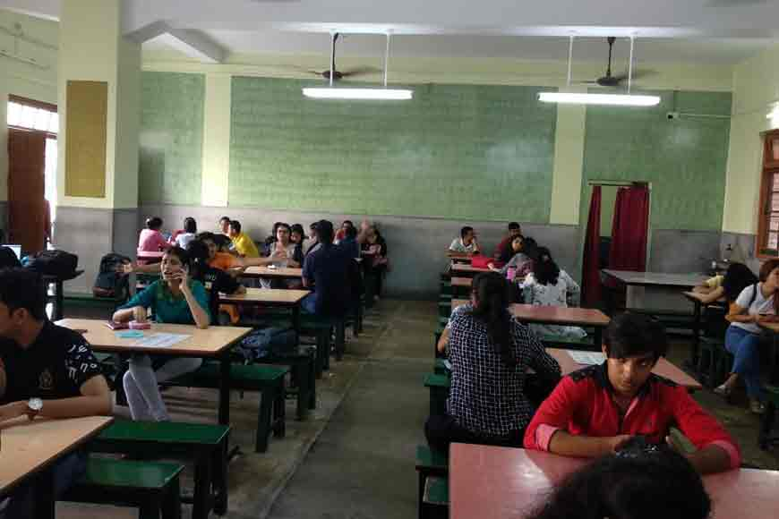

Campus Life

school church
was estanlished in 1978
St. Xavier's School is run by the Society of Jesus, an international Christian religious order that follows the teachings of the Roman Catholic Church, founded by Ignatius of Loyola in 1540. The members of the Society are popularly known as the Jesuits. The Society is headquartered in Rome. St. Xavier's School is run by the Society of Jesus, an international Christian religious order that follows the teachings of the Roman Catholic Church, founded by Ignatius of Loyola in 1540. The members of the Society are popularly known as the Jesuits. The Society is headquartered in Rome.
school Library
was estanlished in 1980
• A library and a reading room are at the disposal of the students which are filled with a wide range of periodicals and magazines of Indian and foreign publication to provide them with up-to-date knowledge. • The library will be open to students daily from 9:30 am to 5.30 pm. Books can be borrowed/returned during the time displayed on the library notice board. Silence shall be strictly enforced at all times and mobile phones must be in switch off mode or else they would be confiscated.

school Auditorium
was estanlished in 1982
The stage has always been held in great honour at St. Xavier’s. For an educational institution an auditorium is not just a venue for school or college events, or merely a meeting place, it is a space where a corporation of students and scholars congregate – to celebrate, to debate, to discuss, and sometimes even to mourn collectively. As we stand at the threshold of another century in the history of St. Xavier’s College, it is meet that we go down memory lane and find out how students gathered here when it all began 130 odd years ago, how this place changed over the century, and how it is now poised to provide a space for even greater creative, cultural and social events, something that St. Xavier’s College has always been noted for.
School Acheivements

Won First Price On Environment Pollution Debate!
They first prize they won was a great acheivement for the school and now after they won this they opened a website on google of th8eir debate! They talked very nicely on the topic environment pollution! Awsome, amazing and wonderful debate! with clear and very imformative points, they spoke very confidently which made the debate more awsome!

Came Second In Inter School Football Competition
St. Xavier’s School, Nevta has organised a 3-day Inter School Football Tournament: ‘Arrupe Cup 2019’. The tournament was inaugurated by Olympian sportswoman and MLA, Krishna Poonia. As many as 18 teams of leading schools are participating. This was informed by Principal of St. Xavier’s School, Nevta, Father John Ravi.

Came Second In Inter School Science Project Competition
They make amazing and awosome projects of their science! They were so amazing and cool that you should go on their sites and check it now. The science projects were up to the point, this acheivement is very important for the school!
-
New School Canteen
St Xavier’s College canteen holds a special place for every Xavierite. Students, as well as alumni, spend hours chilling at the canteen, during and even after their break. The graffiti at the canteen offers a colourful backdrop that adds to the vibe of the place. “There is so much to choose from here, both in vegetarian and non-vegetarian options. There is usually a special menu on Saturdays, and students really look forward to it. I have heard vada pav is the biggest attraction here. My friends and I can’t wait to explore all the options here,” says Valencia Dias, a first year student.
-
Implemented Online Advance Management System

“Online attendance management system” or “e-attendance” is one of them! Online Attendance Management System is an application developed for student's daily attendance in school. It helps to maintain the accurate record and generate summarized student attendance reports for the students by applying various criteria.Nov 7, 2020
Our Almuni

Aditya Thackeray
Aditya Thackeray
He Is An Indian Politician serving As Cabinet Minister Of Tourism And Environment Goverment Of Maharashtra
Know More

Vidya Balan
Vidya Balan
Vidya Balan( born 1 January 1979) is an Indian actress.
Know More

Mukesh Ambani
Mukesh Ambani
Mukesh Dhirubhai Ambani (born 19 April 1957) is an Indian billionaire business magnate, and the chairman, managing director, and largest shareholder of Reliance Industries Ltd.
Know More

Rajdeep Sardesai
Rajdeep Sardesai
Rajdeep Sardesai is an Indian news anchor, journalist and author.
Know More